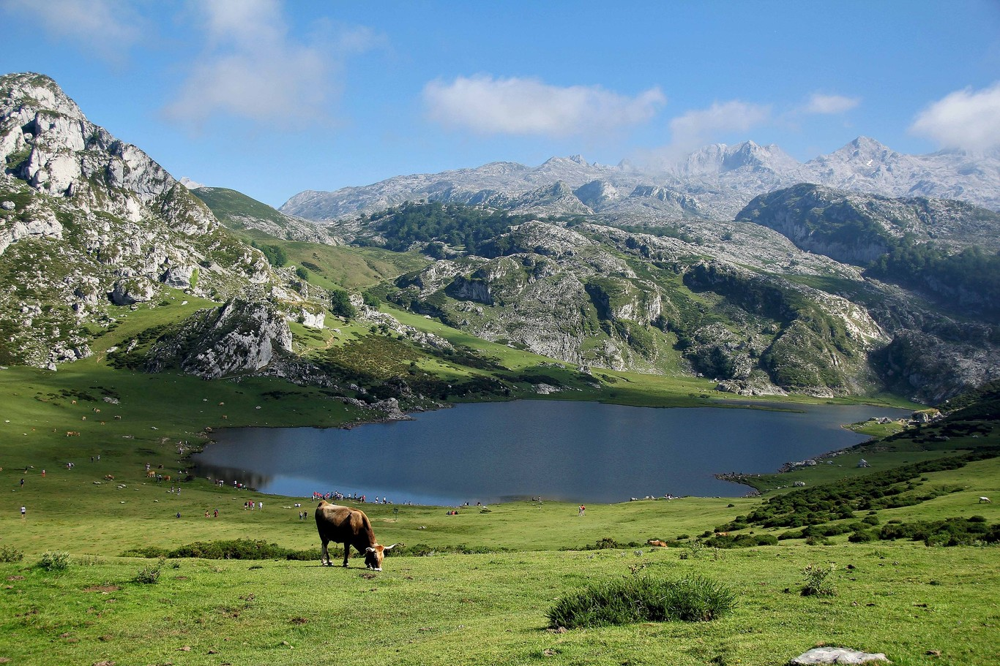

LOGOTIPO
Mis buscadores
Otras informaciones
Otras infiormaciones.Otras infiormaciones. Otras infiormaciones.Otras infiormaciones.Los parques nacionales
- Parque nacional de europa
- Red de parques nacionales
- Parque natural ordesa y monte perdido
- Parque Nacional de Monfragüe
- Parque natural d'aigüestortes
{kind=link}
Informacion principal
Contenido principal.Contenido principal. Contenido principal.Contenido principal.Sierra de gredos
 La sierra de Gredos es una sierra perteneciente al sistema Central, en la península ibérica, situada entre las provincias españolas de Salamanca, Cáceres, Ávila, Madrid y Toledo. Su máxima altitud se da en la provincia de Ávila en el Pico Almanzor a 2592 m s. n. m
La sierra de Gredos es una sierra perteneciente al sistema Central, en la península ibérica, situada entre las provincias españolas de Salamanca, Cáceres, Ávila, Madrid y Toledo. Su máxima altitud se da en la provincia de Ávila en el Pico Almanzor a 2592 m s. n. m
Pirineos
 La cadena montañosa de los Pirineos separa la península Ibérica del resto de Europa, se extiende por más de 430 km entre España y Francia y se alza por sobre los 3,400 m de altura. Los senderos de excursionismo cruzan toda la extensión de la cadena y los parques nacionales ofrecen senderos más cortos, mientras que hay decenas de centros de esquí a ambos lados de los Pirineos. Andorra es un pequeño estado soberano en el centro de la cadena.
La cadena montañosa de los Pirineos separa la península Ibérica del resto de Europa, se extiende por más de 430 km entre España y Francia y se alza por sobre los 3,400 m de altura. Los senderos de excursionismo cruzan toda la extensión de la cadena y los parques nacionales ofrecen senderos más cortos, mientras que hay decenas de centros de esquí a ambos lados de los Pirineos. Andorra es un pequeño estado soberano en el centro de la cadena.
Picos de Europa
 Los Picos de Europa son un macizo montañoso localizado en el norte de España que pertenece a la parte central de la cordillera Cantábrica. Aunque no muy extenso, su cercanía al mar hace que sea pródigo en accidentes geográficos de gran interés